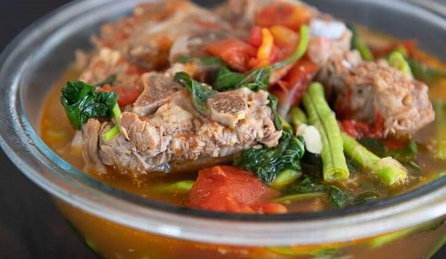

Kinamatisang Baka Recipe
What is Kinamatisang Baka?
Kinamatisang Baka is a simple beef soup composed of beef neck bones, lots of ripe tomato, snake beans, and sweet potato leaves. It inexpensive and simply delicious.
Ingredients
4 lbs. beef neck bone
1 piece Knorr beef cube
6 cups water
6 pieces tomato
1 piece onion
5 cloves garlic
12 pieces sitaw
3 cups sweet potato leaves
3 tablespoons cooking oil
Patis and ground black pepper to taste
Instructions / How to Cook
1. Pour water in a cooking pot. Add beef. Let boil. Continue boiling for 60 to 890 minutes or until the meat tenderizes.
2. Remove the beef from the pot. Set aside.
3. Heat oil in a pan. Saute onion and garlic. Add tomato. Cook until onion and tomato softens.
4. Put the beef neck bones into the pot. Saute for 2 minutes.
5. Pour-in beef stock (water used to tenderize beef). Let boil.
6. Add Knorr Beef Cube. Stir. Cook for 2 minutes.
7. Season with patis and ground black pepper.
8. Add sitaw. Cook for 5 minutes.
9. Add sweet potato leaves (dahon ng kamote). Cover and cook for 2 minutes.
10. Transfer to a serving bowl. Serve hot with rice.